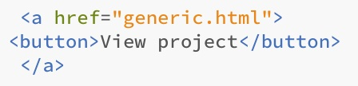
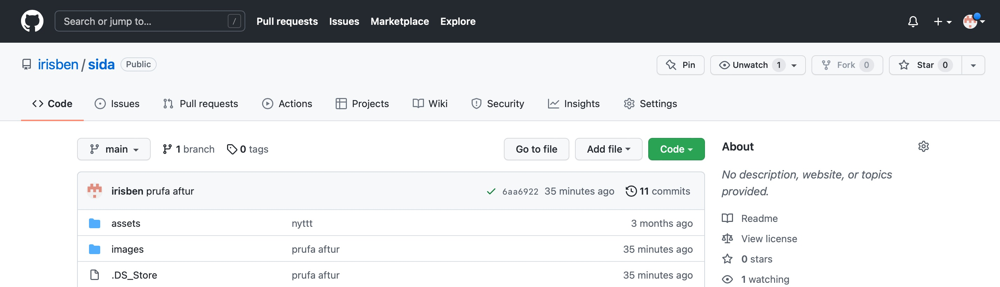

Project 1
Making a website
The objective
The objective of this project was to create a way of documenting the work done throughout the course VÉL608G. So I had to familiarize myself with HTML5 and create my own website which anyone could access through a web browser as well as put my resume on my site.

Preparation
Since I had not worked with HTML5 before the first thing I did was browse through an online HTML tutorial on the website w3school (view w3school here). After that I searched for a template online for my website. I ended up finding one I liked called Spectral on the website HTML5 UP: view HTML5 UP here. The picture below shows the template as it is displayed on the site.

I particularly liked the way the front page looks in this template.
Creating the outline
In order to work with the template I dowloaded the source code editor Brackets. Brackets allows the user to view a live preview of the website in making, which comes in handy with changing the layout.
I added my own photos to the background of the layout as well as for each project on the front page. I then created an entirely new file which will serve as a page for my resume. In order to do this I copied a generic webpage from the template and added the link of the new file to both a button on the far bottom of my front page as well as in the tab-bar in the right corner of all of my pages. In order to create and assign a button I used this particular code:

This creates a button with the text "View project" and assigns it to "generic.html". Similarily I created the hyperlinks on this page, only for the hyperlinks I skipped the "button" command.
I repeated this entire process for this particular site you are on now, but instead of appointing a button on the bottom of the front page to this page I created a new button under the text for "Project 1" on the front page and assigned it to this page.
Similarly I added the links to my social media pages as well as email address to the icons on the bottom of all of the websites I created. The buttons then redirect you to the appropriate links
I also changed the name of my website on all sites to "Íris Benediktsdóttir", as you can see in the upper left corner of this particular site. This was quite simple since there was already a code to create a header in the template I used, so I only had to change the text.
In the beginning I had trouble with resizing images but after a period of trial and error I decided to specify either the "height" and/or "width" of the images by including the command style="width:_px;height:_px;" in the image code.
Uploading the website
In order to upload the website I downloaded Git with Homebrew and created a new repository in Github that I called "sida". One of the upsides of using Git for making a website is that if you make a mistake it is easy to go back and retrieve older versions of the files if you update (push, pull, commit) regularly.
When I had worked on the outlook of my website for a while and was satisfied with the way it looked I uploaded it. First I opened a new terminal in the folder containing all the files for the website. Down below you can see how to easily open a terminal in a specific folder on a Mac computer:

Then I created a new repository in the command line, commited and pushed the newest version of my site to my Github repository. Down below you can se the commands required for that:

The files got pushed to my GitHub repository and in my repository I changed. After a few mintues the changes I had made appeared on my live website.

Alongside the entire execution of this project I noted down what I did and finally moved the text into the file containing this particular website. I uploaded an updated version of my website a few times and this is the final look.